个人介绍 · Profile
机器学习方向博士、华为企业应用教研室主任、华为 22 级专家、任职 7 级专家、计算机技术作家
Section · 01
MetaERP · MetaCRM · IPD-IT 流程优化
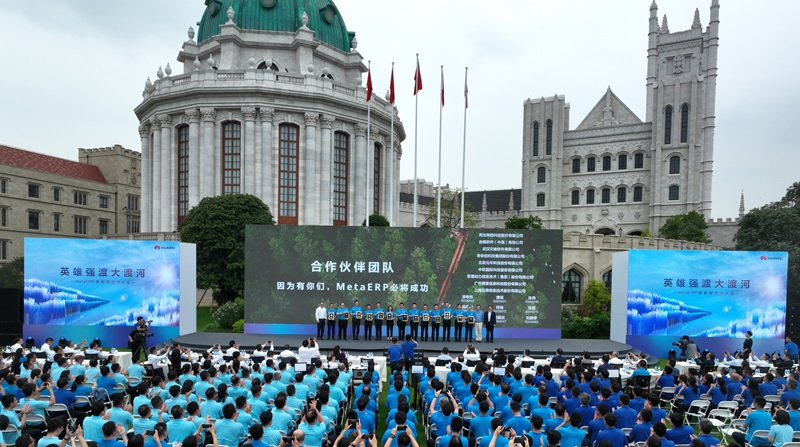
项目经历 · 01 · MetaERP
2019 年，面对外部环境的压力和自身业务挑战，华为决定启动对旧有 ERP 系统替换，并开启研发自主可控的 MetaERP 系统。作为华为有史以来牵涉面最广、复杂性最高的项目，三年来，华为投入数千人，联合产业伙伴和生态伙伴攻坚克难，研发出面向未来的超大规模云原生的 MetaERP，并成功完成对旧有 ERP 系统的替换。
项目经历 · 02 · MetaCRM
解决华为多产业在一套公共能力、公共平台下相互协同的试验局项目。各个产业既有各自的流程与业务能力层面上的差异，也有着大量共性。过去各产业独立建设、独立发展，通过 MetaCRM 项目，尝试在首先营销服域上将共性能力下放，把能力平台做强。既满足数据同源，管理统一，也能够支撑多个产业快速发展。
项目经历 · 03 · IPD-IT 流程变革
推动华为传统的 IT 研发模式向 AI 转型，主导搭建以智能化为基础的研发体系，探索在 AI 场景下，企业产品的设计、实现、评估等过程的变革，并将技术创新转化为落地成果，最终固化为企业的价值流和使能流。以此为目标，通过平台技术、任职资格、赋能计划等手段，牵引企业 IT 研发人员向 AI 方向转型。
Section · 02
技术写作 · 业界影响力 · 研究与产学研
业界影响力 · Influence
最有价值技术专家
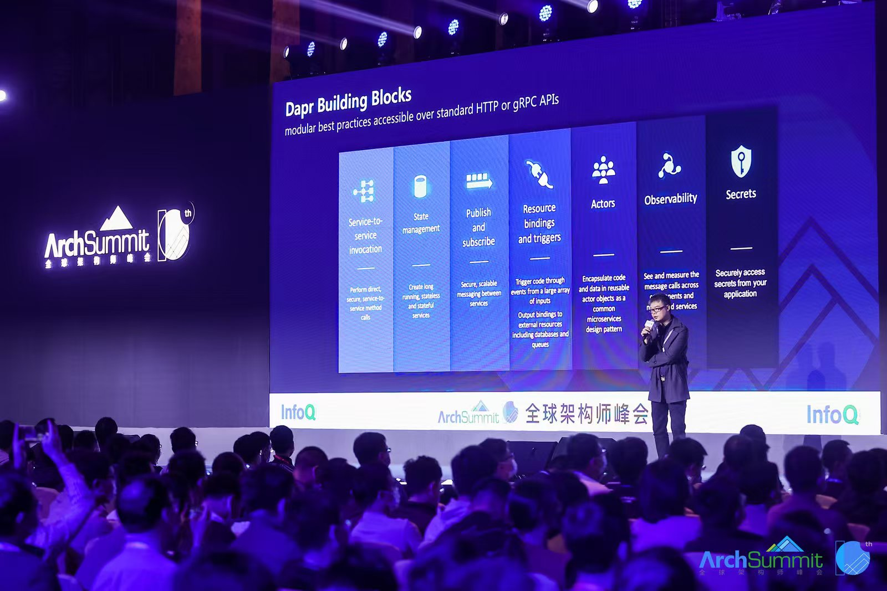
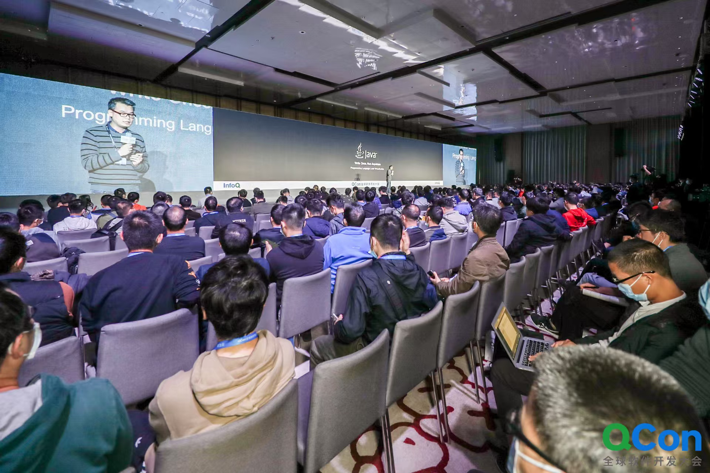
技术写作 · Author
优秀的归纳总结与文字写作能力，六部作品豆瓣评分 9.0 及以上，两部开源文档业内流传。
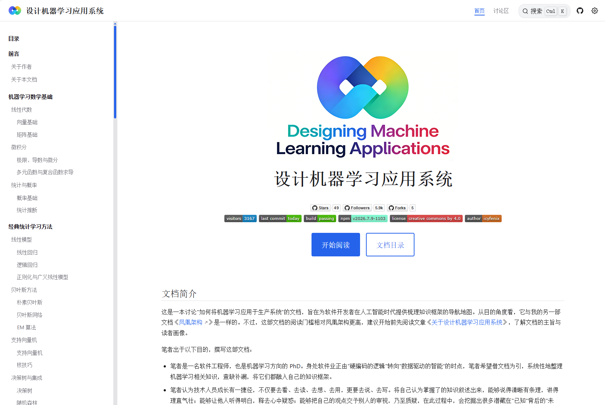
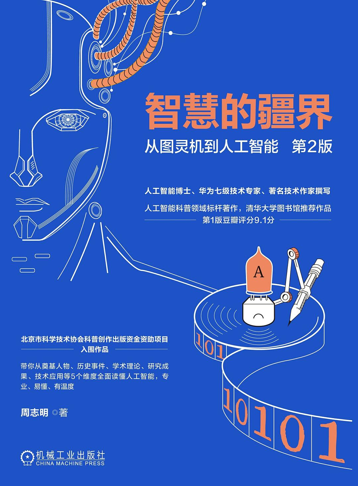
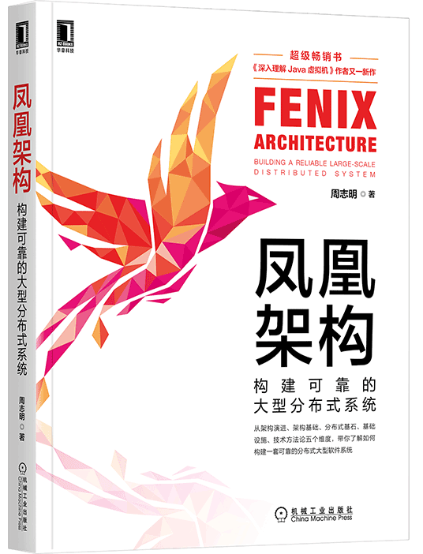
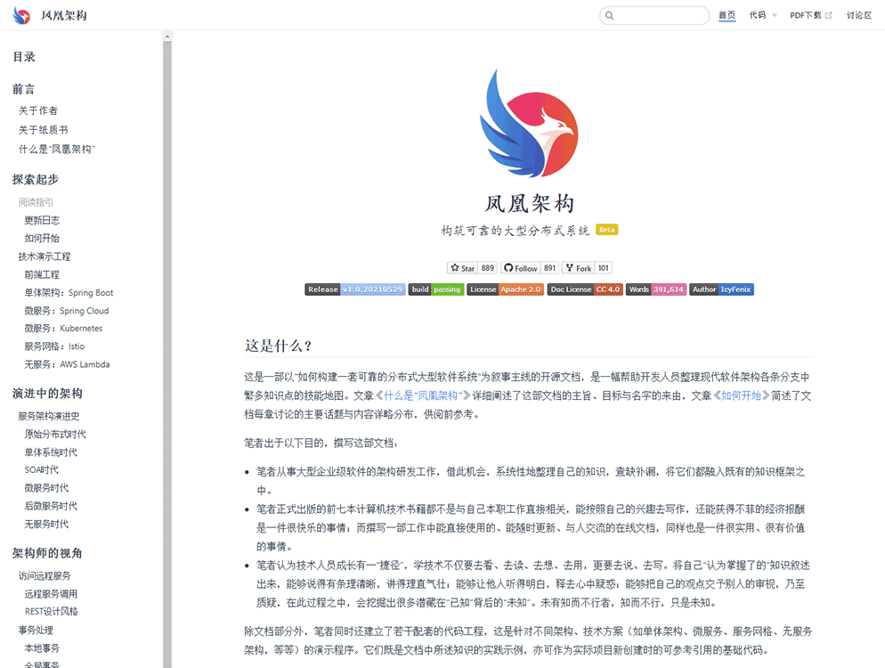
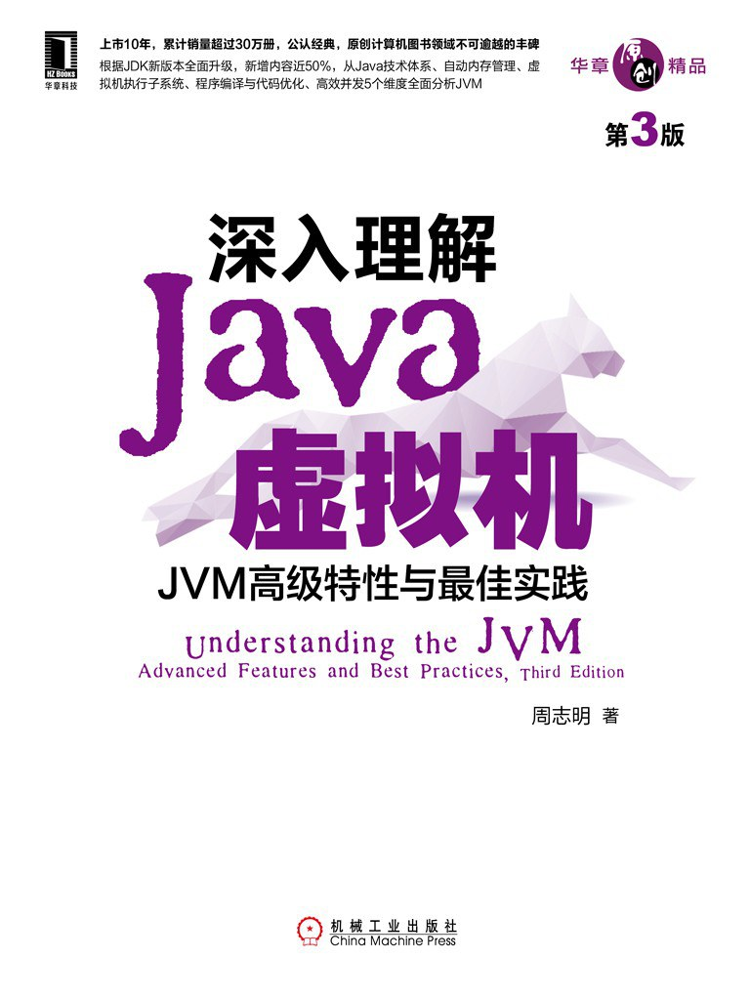
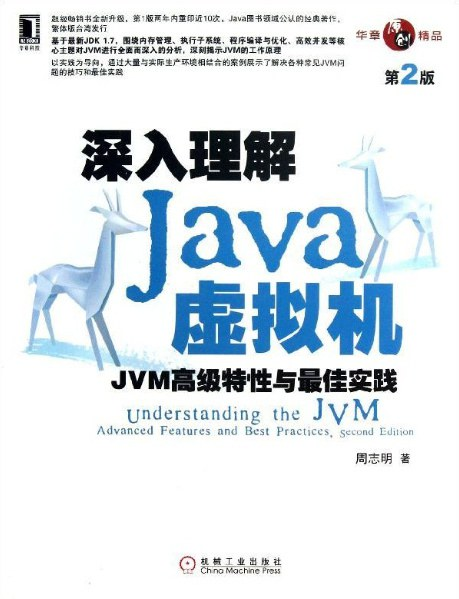
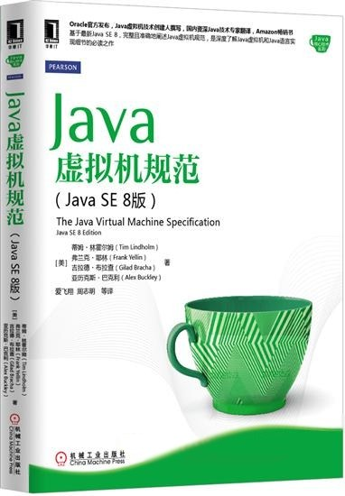
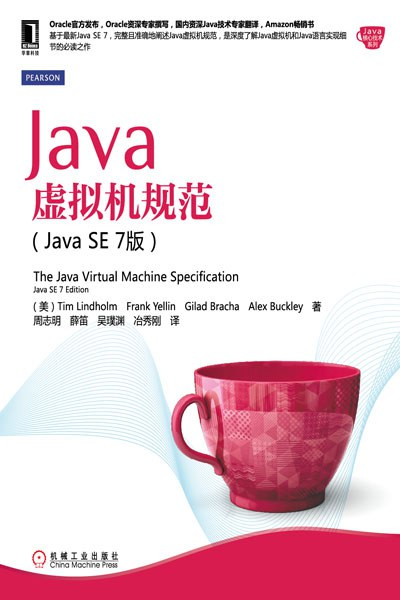
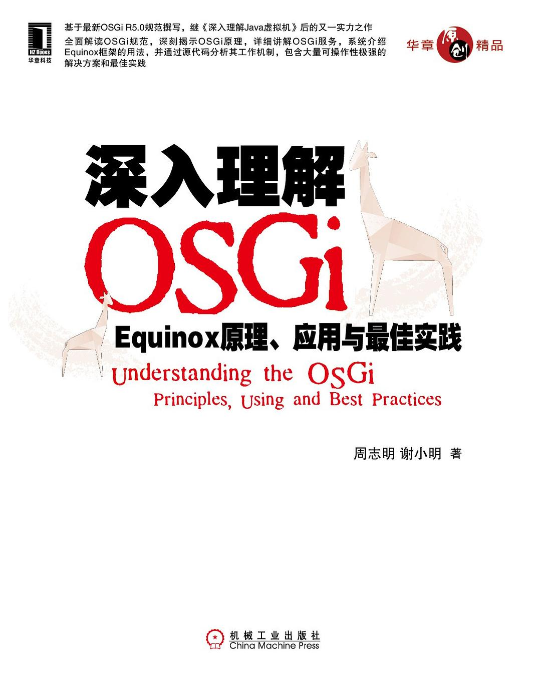
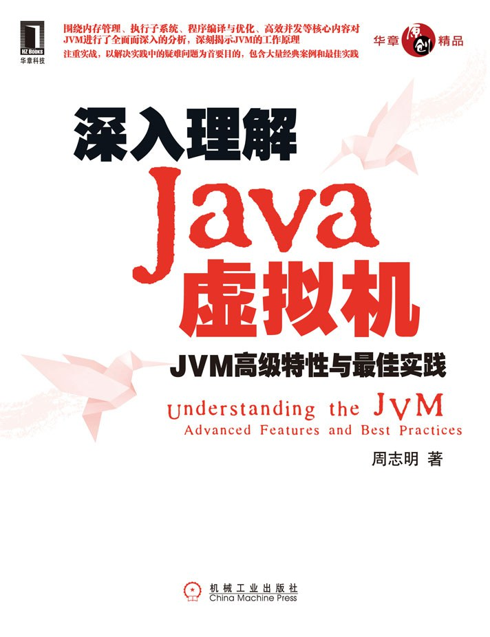
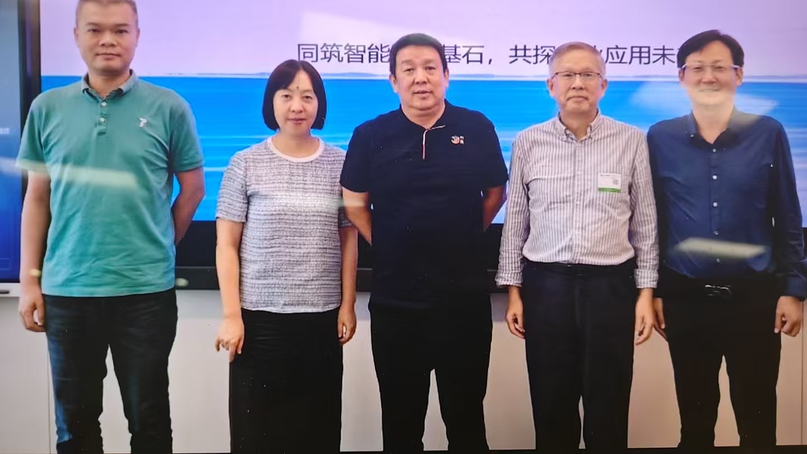
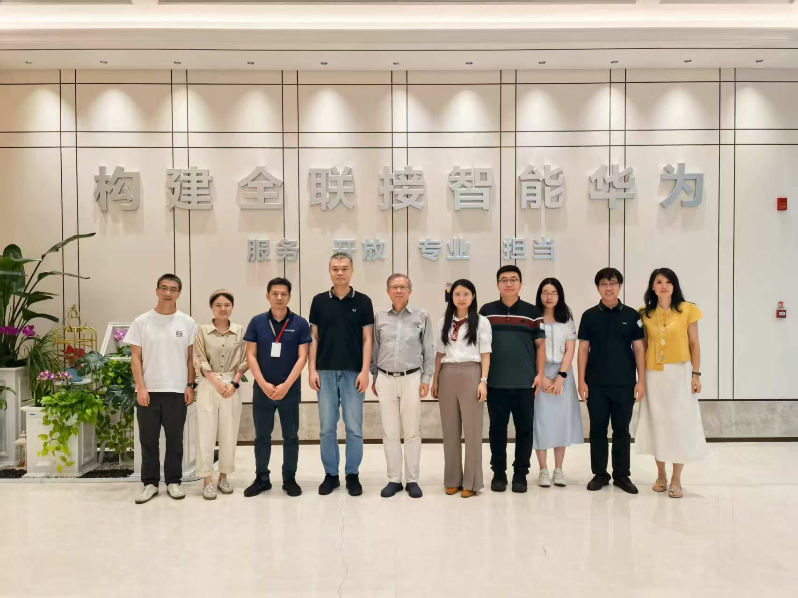
研究与产学研 · Research
博士，攻读博士期间，曾在徐宗本院士（西交大）、刘良院士（澳科大）的项目团队中工作，研究方向机器学习 - 自动化特征选择。
负责下一代新技术的探索与创新，以及公司与高校、科研院所合作项目的管理，拓展并维护国内外高校及学术团体的合作关系。